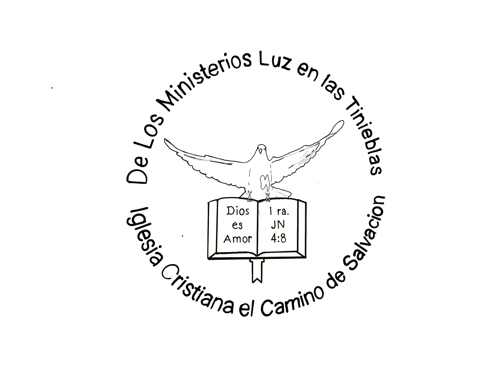

Versículos Para Memorizar
Estos son los versículos seleccionados para memorizar esta temporada.
"El principio de la sabiduría es el temor de Jehová; Los insensatos desprecian la sabiduría y la enseñanza."
"Porque Jehová da la sabiduría, Y de su boca viene el conocimiento y la inteligencia."
"Bienaventurado el hombre que halla la sabiduría, Y que obtiene la inteligencia;"
"Retén el consejo, no lo dejes; Guárdalo, porque eso es tu vida."
"Hijo mío, está atento a mi sabiduría, Y a mi inteligencia inclina tu oído,"
"Porque el mandamiento es lámpara, y la enseñanza es luz, Y camino de vida las reprensiones que te instruyen,"
"Guarda mis mandamientos y vivirás, Y mi ley como las niñas de tus ojos."
"El temor de Jehová es aborrecer el mal; La soberbia y la arrogancia, el mal camino, Y la boca perversa, aborrezco."
"El temor de Jehová es el principio de la sabiduría, Y el conocimiento del Santísimo es la inteligencia."
"El temor de Jehová aumentará los días, Mas los años de los impíos serán acortados."
"Donde no hay dirección sabia, caerá el pueblo; Mas en la multitud de consejeros hay seguridad."
"El camino del necio es derecho en su opinión; Mas el que obedece al consejo es sabio."
"La ley del sabio es manantial de vida Para apartarse de los lazos de la muerte."
"Hay camino que al hombre le parece derecho; Pero su fin es camino de muerte."
"El corazón entendido busca la sabiduría; Mas la boca de los necios se alimenta de necedades."
"Mejor es adquirir sabiduria que oro preciado; Y adquirir inteligencia vale más que la plata."
"El que ahorra sus palabras tiene sabiduria; De espiritu prudente es el hombre entendido."
"La muerte y la vida están en poder de la lengua, Y el que la ama comerá de sus frutos."
"El que guarda el mandamiento guarda su alma; Mas el que menosprecia sus caminos morirá."
"No ames el sueño, para que no te empobrezcas; Abre tus ojos, y te saciarás de pan."
"El hombre que se aparta del camino de la sabiduria Vendrá a parar en la compañía de los muertos."
"Riquezas, honra y vida Son la remuneración de la humildad y del temor de Jehová."
"Compra la verdad, y no la vendas; La sabiduría, la enseñanza y la inteligencia."
"También estos son dichos de los sabios: Hacer acepción de personas en el juicio no es bueno."
"Comer mucha miel no es bueno, Ni el buscar la propia gloria es gloria."
"Sin leña se apaga el fuego, Y donde no hay chismoso, cesa la contienda."
"Mejor es reprensión manifiesta Que amor oculto."
"Bienaventurado el hombre que siempre teme a Dios; Mas el que endurece su corazón caerá en el mal."
"Sin profecía el pueblo se desenfrena; Mas el que guarda la ley es bienaventurado."
"Toda palabra de Dios es limpia; Él es escudo a los que en él esperan."
"Mujer virtuosa, ¿quién la hallará? Porque su estima sobrepasa largamente a la de las piedras preciosas."